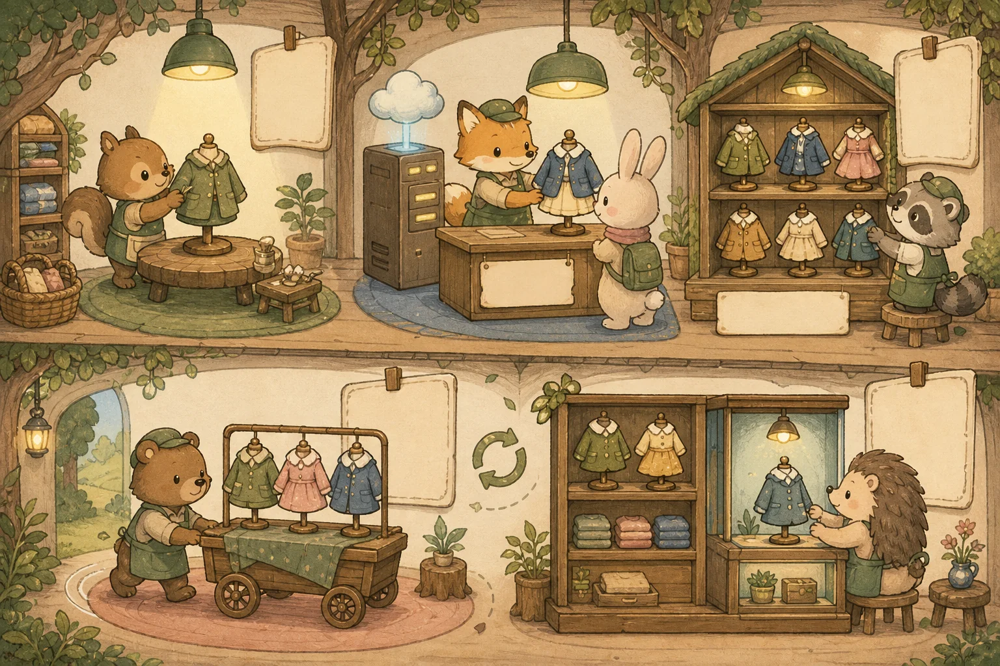
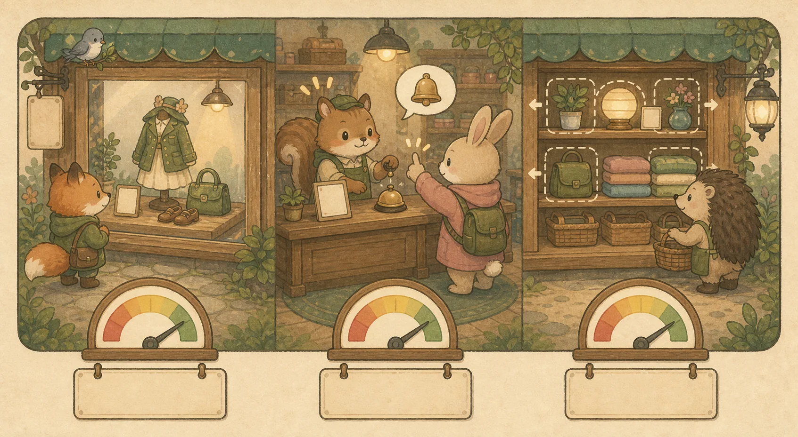

부록 F. 프론트엔드 품질 — 렌더링·성능·접근성
프론트엔드 면접의 1순위 단골은 "렌더링 전략 · Hydration · 성능"입니다. "퍼포먼스 튜닝 경험"을 공고에 못 박는 곳이 많죠. 이 부록은 Ch5(Server/Client Component · Next.js 15)에서 배운 개념을 "이 상황엔 무엇을, 왜"로 답하는 면접 깊이로 끌어올립니다. 모든 예시는 가상 의류 쇼핑몰 Rehab Fashion 도메인으로 이어집니다.
🧭 이 부록 사용법
각 질문은 면접 답변 스크립트처럼 읽으세요. 비유로 큰 그림을 잡고 → 표/코드로 근거를 채우고 → 면접 꼬리 질문으로 한 단계 더 들어갑니다. 마지막 자가 진단 퀴즈를 풀면 대시보드 "오늘의 복습"에 자동 편입되어 간격 반복으로 굳습니다.
🖼️ A. 렌더링 전략 (Rendering)
Q1. CSR · SSR · SSG · ISR · PPR — 언제 각각 쓰나요?
프론트 면접의 1번 타자입니다. 핵심은 단어 암기가 아니라 "SEO가 필요한가 · 콘텐츠가 얼마나 자주 바뀌나 · 서버 부하를 감당할 수 있나"의 3축으로 선택의 근거를 대는 것입니다. "무조건 SSR이 좋다"는 감점, "이 페이지는 SEO가 필요하고 거의 안 바뀌니 ISR"이 가점입니다.
💡 비유로 이해하기: Rehab Fashion 카탈로그를 어떻게 보여줄까
손님에게 옷을 보여주는 방법입니다. CSR은 빈 매장에 손님을 들인 뒤 그 자리에서 옷을 꺼내 거는 것(브라우저가 그림), SSR은 손님이 올 때마다 직원이 즉석에서 진열을 새로 차리는 것, SSG는 개점 전에 진열을 미리 다 차려두는 것(빌드 시), ISR은 미리 차려두되 일정 시간마다 새 진열로 교체, PPR은 고정 진열(설명·이미지)은 미리 깔고 가변 부분(실시간 재고·추천)만 손님 앞에서 채우는 것입니다.

2026 기준 Next.js의 흐름은 "정적으로 할 수 있는 건 정적으로, 꼭 동적이어야 하는 부분만 동적으로"이고, 그 둘을 한 페이지에서 합치는 부분 사전 렌더링(PPR)이 그 결정판입니다. ISR은 정적의 신선도 문제를, PPR은 "정적이냐 동적이냐"의 양자택일 자체를 풉니다. (단 PPR은 Next 15에선 실험 기능 experimental.ppr, Next 16부터 cacheComponents로 opt-in — 2026 현재도 기본값은 아니므로 프로덕션 채택 전 안정화 여부를 확인하세요.)
💡 면접 꼬리 질문: "상품 상세 페이지는 뭘로 만들겠어요?" → "설명·이미지·리뷰는 거의 안 바뀌니 정적, 가격·재고는 실시간이어야 하니, PPR로 정적 셸을 즉시 보내고 재고 슬롯만 스트리밍하겠습니다. PPR이 부담되면 ISR(예: 60초 재검증) + 재고만 클라이언트 패칭으로 타협합니다. 반대로 로그인 뒤 마이페이지는 SEO가 불필요하니 CSR로 충분합니다."
Q2. Hydration이 뭐고, 왜 느려질 수 있나요? 줄이는 법은?
서버가 그린 HTML은 그림(정적)일 뿐, 클릭·입력에 반응하지 못합니다. 브라우저가 JS 번들을 받아 이 정적 HTML에 이벤트 핸들러와 상태를 "연결"해 살아 움직이게 하는 과정이 하이드레이션(Hydration)입니다.
💡 비유로 이해하기: 마네킹에 신경 연결하기
서버가 보낸 HTML은 옷을 다 입은 마네킹입니다 — 보기엔 완성됐지만 움직이진 못하죠. 하이드레이션은 이 마네킹에 신경줄(이벤트·상태)을 하나하나 연결해 손을 흔들 수 있게 만드는 작업입니다. 마네킹이 거대할수록(번들이 클수록) 신경을 다 잇는 데 시간이 걸려, 그 사이 버튼을 눌러도 반응하지 않는 구간이 생깁니다.
왜 느려지나: 화면이 보이는데도(FCP 완료) 클릭이 안 먹는 이유는 ① 큰 JS 번들 다운로드 → ② 파싱·실행 → ③ 컴포넌트 트리 전체 재구성 → ④ 이벤트 부착이 끝나야 비로소 상호작용 가능(TTI)하기 때문입니다. 페이지 전체가 클라이언트 컴포넌트면 이 비용이 최대가 됩니다.
줄이는 4가지 무기:
① 서버 컴포넌트 (RSC)
상호작용이 없는 부분은 리액트 서버 컴포넌트로. 클라이언트로 가는 JS가 0이라 하이드레이션 대상에서 아예 빠집니다.
② 스트리밍 SSR
<Suspense>로 준비된 부분부터 점진적으로 흘려보내 첫 화면을 빨리 보여주고, 무거운 부분은 나중에.
③ 선택적/지연 hydration
화면에 보이는(또는 상호작용한) 부분부터 연결하는 아일랜드(islands) 방식으로 초기 비용 분산.
④ 클라 경계 최소화
'use client'를 잎(leaf) 컴포넌트에만. 페이지 최상단에 두면 하위 전체가 클라 번들에 끌려들어갑니다.
// app/products/[id]/page.tsx —— 'use client' 없음 → 서버 컴포넌트(JS 0)
export default async function ProductPage({ params }) {
const product = await getProduct(params.id); // 서버에서 직접 데이터 패칭
return (
<article>
<h1>{product.name}</h1>
<p>{product.description}</p> {/* 정적 → 하이드레이션 불필요 */}
<AddToCartButton id={product.id} /> {/* 인터랙션 필요한 잎만 클라 */}
</article>
);
}
// app/products/[id]/AddToCartButton.tsx
'use client'; // ← 이 작은 잎 컴포넌트만 클라 번들
export function AddToCartButton({ id }) {
return <button onClick={() => addToCart(id)}>장바구니 담기</button>;
}💡 면접 꼬리 질문: "'use client'를 페이지 맨 위에 한 줄 붙이면 어떻게 되나요?" → 그 아래 모든 하위 컴포넌트가 클라이언트 번들에 포함되어 하이드레이션 비용과 번들 크기가 커집니다. 서버 컴포넌트의 이점이 사라지죠. 그래서 클라이언트 경계는 "상태·이벤트가 실제로 필요한 가장 작은 잎"까지 내려야 합니다.
📊 B. 성능 측정 (Core Web Vitals)
Q3. Core Web Vitals(LCP · INP · CLS) — 각각 뭐고, 나쁘면 어떻게 진단하나요?
코어 웹 바이탈(Core Web Vitals)은 구글이 정한 "체감 품질" 3대 지표입니다. 점수 자체보다 "나쁠 때 무엇을 의심하고 어떤 순서로 진단하는가"가 면접 포인트입니다.
💡 비유로 이해하기: 매장 첫인상 3요소
손님이 매장에 들어섰을 때 — 가장 큰 메인 진열대가 언제 눈에 들어오나(LCP), 옷을 집어 들었을 때 점원이 얼마나 빨리 반응하나(INP), 고르는 동안 진열대가 갑자기 움직여 헛손질하게 만들지 않나(CLS). 셋 다 좋아야 "쾌적한 매장"입니다.

💡 면접 꼬리 질문: "버튼을 눌러도 화면 반응이 굼떠요. INP가 나쁩니다. 진단 순서는?" → ① 크롬 Performance 패널로 기록해 롱 태스크(Long Task, 50ms+)를 찾고, ② 어떤 이벤트 핸들러·리렌더가 메인 스레드를 잡는지 특정, ③ 무거운 계산은 작업 분할(`yield`)·메모이제이션·웹 워커로 빼고, ④ 불필요한 리렌더는 상태 구조·`key`·메모이제이션으로 줄입니다. "이미지가 커서"는 LCP, "화면이 튀어서"는 CLS 쪽이라 원인을 혼동하면 안 됩니다.
Q4. 초기 로딩이 느린 SPA, 어디부터 자르나요?
"번들이 크다"는 막연한 진단이 아니라 측정 → 가장 큰 범인부터 분할이라는 순서를 보여줘야 합니다.
💡 비유로 이해하기: 트럭에 짐을 다 싣고 출발 vs 필요한 것 먼저
첫 배송에 창고 재고를 통째로 트럭에 싣고 출발하면 출발 자체가 늦습니다. 지금 당장 필요한 짐만 먼저 싣고, 나머지는 요청이 올 때 추가 배송하면 첫 출발이 빨라집니다. 이것이 코드 스플리팅입니다.
자르는 순서 — 효과 큰 것부터:
1. 번들 분석
analyzer로 무엇이 큰지부터 측정. 추측 금지 — 보통 한두 개 라이브러리가 범인.
2. 코드 스플리팅
라우트 경계 + 첫 화면에 불필요한 무거운 컴포넌트(모달·차트·에디터)를 동적 import로 분리.
3. 트리 셰이킹·교체
미사용 코드 제거, 무거운 라이브러리 경량 대체(예: moment → day.js).
4. 이미지 전략
LCP 이미지는 우선 로딩, 화면 밖 이미지는 lazy. (Q5)
5. 프리페치
사용자가 갈 법한 다음 페이지를 미리 당겨 체감 전환을 즉각적으로.
import dynamic from 'next/dynamic';
// 첫 화면에 당장 필요 없는 무거운 차트 → 별도 청크로 분리, 보일 때 로드
const ReviewChart = dynamic(() => import('./ReviewChart'), {
loading: () => <p>리뷰 통계 불러오는 중…</p>,
ssr: false, // 브라우저에서만 필요한 무거운 위젯이면
});
export default function ProductReviews({ id }) {
return <section><ReviewChart productId={id} /></section>;
}💡 면접 꼬리 질문: "코드 스플리팅의 기준은 뭔가요?" → 기본은 라우트 단위 자동 분할, 거기에 "첫 페인트에 보이지 않거나 상호작용 후에야 필요한 무거운 컴포넌트"(모달·차트·리치 에디터·지도)를 수동으로 떼어냅니다. 너무 잘게 쪼개면 요청 수가 늘어 오히려 손해라 균형이 필요합니다.
⚙️ C. 실전 최적화 (이미지 · Lighthouse)
Q5. 이미지 최적화(next/image)와 Lighthouse 읽는 법
이미지는 대부분 페이지에서 가장 무거운 자원이자 LCP의 주범입니다. Next.js의 <Image>는 손이 많이 가는 최적화를 선언적으로 처리해 줍니다.
💡 비유로 이해하기: 손님 화면에 맞춰 사진을 자동 리사이즈
같은 상품 사진이라도 모바일 손님에겐 작은 사진, 데스크톱 손님에겐 큰 사진을 줘야 합니다. <Image>는 손님 화면(뷰포트)에 맞는 크기·포맷(WebP/AVIF)으로 자동 변환·전송하는 똑똑한 사진 매니저입니다.
next/image가 자동으로 해주는 것: ① 최신 포맷(WebP/AVIF) 변환, ② 화면 크기별 srcset 자동 생성, ③ 기본 lazy 로딩(화면 밖 지연), ④ width/height(또는 fill)로 공간 예약 → CLS 방지, ⑤ 첫 화면 LCP 이미지엔 priority로 즉시 로딩.
import Image from 'next/image';
<Image
src="/products/hoodie-hero.webp"
alt="안티그래비티 시그니처 후드" {/* 접근성 + SEO */}
width={1200} height={600} {/* 공간 예약 → CLS 0 */}
priority {/* 첫 화면 LCP 이미지에만! */}
sizes="(max-width: 768px) 100vw, 1200px"
/>Lighthouse 읽는 법: Performance 점수는 여러 지표의 가중 합입니다(LCP·TBT 비중이 큼). Opportunities(줄일 수 있는 시간)부터 보고 Diagnostics로 원인을 좁힙니다. 단, Lighthouse는 실험실(lab) 측정이라 내 PC 성능·네트워크에 좌우됩니다 — 실제 사용자 데이터(필드/CrUX·RUM)가 최종 진실입니다. "Lab은 진단 도구, Field가 성적표"로 정리하세요.
💡 면접 꼬리 질문: "priority는 언제 붙이나요?" → 첫 화면 LCP가 되는 이미지 1장에만 붙입니다. 모든 이미지에 붙이면 우선순위가 의미를 잃고 오히려 초기 대역폭을 잡아먹어 LCP가 나빠집니다.
♿ D. 접근성 & Tailwind 실전 (보강)
접근성(a11y)과 Tailwind — 면접에서 한 단계 더
웹 접근성(a11y)은 "장애가 있는 사용자도 쓸 수 있게"를 넘어 SEO·법적 요건·전체 UX를 동시에 끌어올리는 투자입니다. Tailwind CSS는 유틸리티 클래스로 빠르고 일관된 스타일링을 주는, 공고에 자주 보이는 도구입니다.
♿ 접근성 핵심 5
① 시맨틱 HTML(클릭은 div가 아니라 button) ② 이미지 대체 텍스트 ③ 키보드 내비/포커스 가능 ④ 충분한 색 대비 ⑤ ARIA는 최후의 보충(네이티브 요소로 안 될 때만; 남용은 오히려 해악).
🎨 Tailwind 실전
유틸리티 우선(빠름·일관) ↔ 클래스가 길어짐. 반복은 컴포넌트로 추출하거나 @apply를 신중히. 색·간격은 디자인 토큰(theme)으로, 조건부 클래스는 clsx, 다크모드는 dark: 변형으로.
{/* div가 아니라 button → 키보드 포커스·엔터 동작이 공짜로 따라온다 */}
<button
type="button"
aria-label="장바구니에 담기"
className="px-4 py-2 rounded-lg bg-indigo-600 text-white
hover:bg-indigo-700 focus-visible:ring-2 focus-visible:ring-offset-2
disabled:opacity-50"
>
담기
</button>🔗 이어보기: 렌더링·하이드레이션의 토대는 Ch5, 상태·폼은 Ch6, 서버 통신은 Ch7. 백엔드 확장과 함께 보면 부록 E(시스템 설계)로 풀스택 그림이 완성됩니다.
🎤 모의 면접 — 프론트엔드 품질
실제 면접처럼 꼬리에 꼬리를 무는 흐름입니다. 면접관 질문 → 답변 뼈대 → 이어지는 꼬리 질문 순으로, 소리 내어 답해 보세요.
🗣️ "상품 상세 페이지, 어떤 렌더링 전략을 쓰고 왜 그렇게 정했나요?"
답변 뼈대: "SEO가 필요하고 트래픽이 크며 가격은 가끔 갱신된다"를 전제로 → ISR(예: 60초 재검증)로 정적 속도·낮은 서버 부하·SEO를 함께 얻습니다. 실시간 재고까지 섞는다면 PPR로 정적 셸 + 동적 슬롯. 로그인 뒤 마이페이지는 SEO가 불필요하니 CSR.
↪️ 꼬리: "PPR과 ISR의 차이는?" → ISR은 페이지 단위 주기적 재생성, PPR은 한 페이지 안에서 정적 셸과 동적 스트리밍을 혼합.
🗣️ "버튼 클릭 반응이 굼뜨다는 제보가 있습니다(INP 나쁨). 어떻게 진단·개선하나요?"
답변 뼈대: 크롬 Performance 패널로 롱 태스크를 찾고 → 어떤 핸들러·리렌더가 메인 스레드를 잡는지 특정 → 무거운 계산은 작업 분할·메모이제이션·웹 워커로, 불필요한 리렌더는 상태 구조로 제거.
↪️ 꼬리: "LCP도 같이 나쁘면?" → 원인이 다릅니다(느린 서버·큰 이미지) → priority·CDN·프리로드·이미지 최적화로 접근.
🗣️ "초기 번들이 너무 큽니다. 어디부터 손대겠어요?"
답변 뼈대: 추측 금지 — 번들 분석으로 범인부터 측정 → 라우트·무거운 컴포넌트(모달·차트)를 동적 import로 분리 → 무거운 라이브러리 경량 대체 → LCP 이미지 우선·나머지 lazy → 프리페치.
↪️ 꼬리: "'use client'는 어디에 둬야 하죠?" → 상태·이벤트가 필요한 잎(leaf) 컴포넌트에만. 최상단에 두면 하위 전체가 클라 번들에 끌려들어가 하이드레이션 비용↑.
Q6. 이벤트 루프 — 콜 스택, 매크로태스크 vs 마이크로태스크
JavaScript는 싱글 스레드인데도 네트워크 요청, 타이머, 사용자 이벤트를 동시에 처리하는 것처럼 보입니다. 그 비밀이 바로 이벤트 루프입니다. 면접에서는 "setTimeout(0)과 Promise.then 중 누가 먼저 실행되나?"라는 출력 순서 예측으로 깊이를 검증합니다.
💡 비유로 이해하기: 1인 카페 바리스타
바리스타는 한 명(싱글 스레드)이라 동시에 두 잔을 내릴 순 없습니다. 대신 에스프레소 머신에 원두를 넣어두고(비동기 위임), 추출되는 동안 다른 주문을 받습니다.
추출이 끝나면 그 주문은 대기 줄(태스크 큐)에 들어가고, 바리스타는 현재 일을 마친 뒤 줄에서 다음 일을 꺼냅니다. 단, "사장님 직속 급한 메모(마이크로태스크)"는 일반 대기 줄보다 항상 먼저 처리합니다.
4개의 핵심 구성요소 — 이벤트 루프는 콜 스택이 빌 때마다 큐를 확인하는 무한 반복문입니다.
콜 스택 (Call Stack)
현재 실행 중인 함수가 쌓이는 곳. 싱글 스레드라 스택은 단 하나. 여기가 비어야 큐에서 다음 일을 꺼낼 수 있습니다.
Web API / 백그라운드
setTimeout, fetch, DOM 이벤트 등을 브라우저(엔진 밖)가 대신 처리. 완료되면 콜백을 적절한 큐로 보냅니다.
매크로태스크 큐
setTimeout/setInterval, I/O, UI 이벤트 콜백. 이벤트 루프 한 번에 딱 1개만 꺼내 실행합니다.
마이크로태스크 큐
Promise.then/catch/finally, queueMicrotask, await 이후. 매크로태스크보다 우선이며, 큐가 빌 때까지 전부 비웁니다.
이벤트 루프의 1 사이클(틱) 순서 — 이 순서가 면접의 핵심입니다.
- ① 콜 스택의 동기 코드를 끝까지 실행 (스택이 빌 때까지)
- ② 마이크로태스크 큐를 전부 비움 (실행 중 새로 추가된 마이크로태스크도 이번에 다 처리)
- ③ 필요 시 렌더링 (스타일 계산 → 레이아웃 → 페인트)
- ④ 매크로태스크 큐에서 단 1개만 꺼내 실행 → 다시 ②로
console.log('1. 동기 시작'); // 동기 → 콜 스택에서 즉시 실행
setTimeout(() => {
console.log('4. setTimeout (매크로)'); // 매크로태스크 큐로 이동 (가장 나중)
}, 0); // 0ms여도 큐를 거치므로 즉시가 아님
Promise.resolve().then(() => {
console.log('3. Promise.then (마이크로)'); // 마이크로태스크 큐로 이동
});
console.log('2. 동기 끝'); // 동기 → 콜 스택에서 즉시 실행
// ── 실제 출력 순서 ───────────────────────────
// 1. 동기 시작
// 2. 동기 끝 ← 동기 코드가 먼저 전부 실행됨
// 3. Promise.then (마이크로) ← 스택이 비면 마이크로 큐부터 비움
// 4. setTimeout (매크로) ← 마이크로를 다 비운 "뒤에야" 매크로 1개 실행왜 이 순서인가? setTimeout(0)은 "0ms 뒤 실행"이 아니라 "최소 0ms 뒤 매크로 큐에 등록"입니다. 반면 Promise.then 콜백은 마이크로 큐에 들어가고, 이벤트 루프는 매크로태스크 1개를 처리하기 전에 마이크로 큐를 완전히 비우는 것을 보장합니다. 그래서 동기(1, 2) → 마이크로(3) → 매크로(4) 순서가 됩니다.
렌더링은 언제? 브라우저는 마이크로태스크 큐를 모두 비운 직후, 다음 매크로태스크로 넘어가기 전에 화면을 다시 그릴지 판단합니다(보통 모니터 주사율에 맞춰 약 16.7ms 주기). 따라서 then 안에서 DOM을 여러 번 바꿔도 중간 상태는 화면에 보이지 않고 최종 결과만 한 번에 렌더링됩니다. 반대로 마이크로태스크가 끝없이 자기 자신을 다시 큐에 넣으면 ③ 렌더링 단계에 영영 도달하지 못해 화면이 멈춥니다.
꼬리질문 대비 — 무거운 동기 작업이 UI를 멈추는 이유와 해법
싱글 스레드이므로 무거운 반복 연산(수십만 건 정렬, 큰 JSON 파싱 등)이 콜 스택을 오래 점유하면, 그동안 이벤트 루프가 다음 단계로 넘어가지 못합니다. 즉 클릭 콜백·스크롤·렌더링이 전부 큐에서 대기하다 멈춘 것처럼 보이는 "UI 프리징(jank)"이 발생합니다. 해법은 두 가지입니다.
① 작업 분할 (Chunking)
큰 작업을 잘게 쪼개 setTimeout(매크로태스크)이나 requestIdleCallback(브라우저 idle 콜백)으로 나눠 이벤트 루프에 제어권을 양보. 청크 사이마다 이벤트 루프가 렌더링·입력을 처리할 틈이 생겨 UI가 반응합니다.
② Web Worker
별도 스레드에서 연산을 돌리고 결과만 postMessage로 메인 스레드에 전달. 메인 스레드(UI)는 전혀 막히지 않습니다. 무거운 CPU 작업의 정석 해법.
예: Rehab Fashion 상품 목록에서 10만 건을 클라이언트 정렬해야 한다면, 메인 스레드에서 한 번에 돌리는 대신 Web Worker로 넘겨 정렬하고 결과만 받아 렌더링하면 스크롤·버튼이 끊기지 않습니다.
💡 면접 꼬리 질문: "async/await는 이벤트 루프 관점에서 어떻게 동작하나요?" → async 함수는 await를 만나면 그 지점에서 일시 중단하고 제어권을 호출자에게 반환합니다. await한 Promise가 처리되면, 이후 코드는 마이크로태스크로 예약되어 실행됩니다. 즉 await 다음 줄은 .then() 콜백과 동일하게 마이크로태스크 큐를 통해 재개됩니다. 그래서 이미 처리된(또는 즉시 처리되는) Promise를 await했다면 그 다음 줄이 같은 시점에 걸어둔 setTimeout보다 먼저 실행됩니다. 다만 await한 Promise가 한참 뒤에 완료되는 경우(예: await fetch())에는, 먼저 등록해 둔 setTimeout이 그 사이에 실행될 수 있다는 점에 주의하세요.
Q7. JS 핵심 — 클로저·호이스팅·this·프로토타입
이 네 가지는 JavaScript의 동작 원리를 묻는 단골 주제로, 한 개념의 답이 다른 개념의 꼬리 질문으로 이어지는 경우가 많습니다. 표면적 정의가 아니라 실행 컨텍스트(Execution Context)와 스코프의 관점에서 일관되게 설명하는 것이 핵심입니다.
💡 비유로 이해하기: 함수가 들고 다니는 배낭
함수는 태어날 때 자기를 둘러싼 주변 환경(렉시컬 스코프)을 작은 배낭에 담아 들고 다닙니다.
나중에 어디서 실행되든, 함수는 배낭 속 변수를 꺼내 씁니다. 바로 이 배낭이 클로저입니다.
1) 클로저 (Closure) — 함수가 선언될 당시의 렉시컬 환경을 기억하여, 외부 함수가 종료된 뒤에도 그 변수에 계속 접근하는 현상입니다. 데이터를 외부에서 직접 못 건드리게 숨기는 은닉(캡슐화)의 핵심 도구입니다.
// (1) 카운터 — count는 외부에서 직접 접근 불가, increment만 기억
function createCounter() {
let count = 0; // 이 변수가 클로저에 갇힌다(private)
return function () {
count += 1; // 외부 함수가 끝나도 count를 계속 참조
return count;
};
}
const counter = createCounter();
counter(); // 1
counter(); // 2 ← count가 메모리에 살아남아 상태 유지
// (2) 모듈 패턴 — 공개 API만 노출, 내부 상태는 은닉
const cart = (function () {
let items = []; // private 상태
return {
add: (name) => items.push(name), // 공개 메서드
count: () => items.length, // 공개 메서드
};
})();
cart.add('티셔츠');
cart.count(); // 1
cart.items; // undefined ← 외부에서 직접 접근 차단2) 호이스팅 (Hoisting) — 변수·함수 선언이 스코프 최상단으로 끌어올려진 것처럼 동작합니다. 단, 선언만 끌어올려지고 할당은 제자리에 남습니다. 선언 키워드에 따라 결과가 완전히 달라집니다.
3) this 결정 규칙 — JavaScript의 this는 함수가 정의된 위치가 아니라 호출되는 방식에 따라 런타임에 결정됩니다(화살표 함수는 예외). 다음 4가지 규칙이 있으며, 아래로 갈수록 우선순위가 높습니다(④ new가 최우선 → ③ 명시적 → ② 암시적 → ① 기본 순).
① 기본 바인딩
그냥 f()로 호출. 일반 모드는 전역 객체, strict mode면 undefined.
② 암시적 바인딩
obj.f()처럼 점 앞 객체가 this. 점 왼쪽이 누구냐가 기준.
③ 명시적 바인딩
call·apply(즉시 호출)·bind(고정한 새 함수 반환)로 this를 직접 지정.
④ new 바인딩
new F() 시 새로 만든 빈 객체가 this. 최우선 순위.
const user = {
name: '민지',
greet() { return `안녕, ${this.name}`; }, // 점 앞 user가 this(②)
};
user.greet(); // "안녕, 민지"
const fn = user.greet;
fn(); // strict mode면 TypeError(this가 undefined) ← ①
fn.call({ name: '철수' }); // "안녕, 철수" ← ③ 명시적으로 this 지정
// 화살표 함수: 자신만의 this가 없다 → 선언 시점의 바깥 this를 그대로(렉시컬)
const timer = {
label: '세일',
start() {
setTimeout(() => {
// 화살표라서 this가 timer로 고정(일반 함수였다면 this가 풀렸을 것)
console.log(this.label); // "세일"
}, 100);
},
};
timer.start();핵심: 화살표 함수는 this·arguments를 자체적으로 갖지 않아 call/bind로 바꿀 수 없습니다. 그래서 콜백에는 강점이지만, 객체 메서드나 생성자로는 부적합합니다.
4) 프로토타입 체인과 상속 — 모든 객체는 숨은 링크 [[Prototype]](__proto__)로 부모 객체를 가리킵니다. 어떤 속성을 찾을 때 자신에게 없으면 이 링크를 타고 위로 올라가며 탐색하는데, 이것이 프로토타입 체인이며 JS 상속의 본질입니다.
function Product(name) {
this.name = name; // 인스턴스 고유 속성
}
// 메서드는 prototype에 한 번만 정의 → 모든 인스턴스가 공유(메모리 절약)
Product.prototype.describe = function () {
return `${this.name} 상품`;
};
const tee = new Product('티셔츠');
tee.describe(); // "티셔츠 상품"
// 탐색 순서: tee(없음) → Product.prototype(있음!) → Object.prototype → null
Object.getPrototypeOf(tee) === Product.prototype; // true
tee.hasOwnProperty('name'); // true (자기 소유)
tee.hasOwnProperty('describe'); // false (프로토타입에서 빌려 씀)
// ES6 class는 이 프로토타입 메커니즘을 감싼 문법 설탕(syntactic sugar)
class Clothing extends Product { // extends = 프로토타입 체인 연결
constructor(name, size) {
super(name); // 부모 생성자 호출
this.size = size;
}
}5) 꼬리 질문 핵심 — 반복문 안 setTimeout: 가장 빈출되는 함정입니다. var는 함수 스코프라 루프 전체가 변수 하나를 공유하고, 콜백이 실행될 즈음엔 루프가 이미 끝나 i가 최종값(3)이 되어 있습니다. 반면 let은 블록 스코프라 반복마다 새 바인딩이 생기고, 각 클로저가 그 시점의 값을 따로 기억합니다.
for (var i = 0; i < 3; i++) {
setTimeout(() => console.log(i), 0); // 3, 3, 3 ← 모두 같은 i 공유
}
for (let j = 0; j < 3; j++) {
setTimeout(() => console.log(j), 0); // 0, 1, 2 ← 반복마다 새 j 바인딩
}
// var로도 0,1,2를 내려면 IIFE로 값을 복사해 클로저를 따로 가둔다
for (var k = 0; k < 3; k++) {
(function (captured) {
setTimeout(() => console.log(captured), 0); // 0, 1, 2
})(k);
}💡 면접 꼬리 질문: "화살표 함수를 객체 메서드로 쓰면 안 되는 이유는?" → 화살표 함수는 자신의 this가 없어 선언 시점의 상위 스코프 this(보통 모듈/전역)를 그대로 가져옵니다. 따라서 obj.method()로 호출해도 this가 obj를 가리키지 못해 인스턴스 속성에 접근할 수 없습니다. 객체 메서드는 일반 함수(혹은 메서드 축약 문법)로 정의하고, 화살표 함수는 그 안의 콜백처럼 this를 상위에 고정하고 싶을 때 써야 합니다.
Q8. 브라우저 렌더링 과정(CRP) — reflow vs repaint
브라우저가 HTML/CSS를 받아 화면에 픽셀을 찍기까지의 단계를 Critical Rendering Path(CRP)라 합니다. 프론트엔드 면접에서는 "스타일을 어떻게 바꿔야 60fps가 깨지지 않는가"를 묻기 위한 단골 주제이며, reflow·repaint·composite의 비용 차이를 정확히 구분하는 것이 핵심입니다.
💡 비유로 이해하기: 잡지 편집실의 인쇄 공정
기사 원고(DOM)와 스타일 가이드(CSSOM)를 합쳐 최종 지면 배치안(Render Tree)을 만듭니다.
글자 크기를 키우면(reflow) 뒤 페이지 전체가 밀려 지면을 다시 짜야 합니다 — 가장 비쌉니다.
글자 색만 바꾸면(repaint) 배치는 그대로 둔 채 잉크만 다시 칠합니다 — 덜 비쌉니다.
완성된 인쇄물을 손으로 슬쩍 옮기는 것(composite)은 지면을 건드리지 않으니 가장 쌉니다.
① Critical Rendering Path 6단계:
DOM →
CSSOM →
Render Tree →
Layout(reflow) →
Paint →
Composite
- DOM: HTML을 파싱해 노드 트리를 구성합니다.
- CSSOM: CSS를 파싱해 스타일 규칙 트리를 만듭니다. (CSS는 렌더링 차단 리소스)
- Render Tree: DOM + CSSOM을 결합하되,
display:none처럼 화면에 그려지지 않는 노드는 제외합니다. - Layout(reflow): 각 노드의 위치·크기(좌표, 폭, 높이)를 픽셀 단위로 계산합니다.
- Paint: 텍스트·색·테두리·그림자 등을 레이어별 비트맵으로 칠합니다.
- Composite: 여러 레이어를 GPU가 합성해 최종 화면에 출력합니다.
② reflow vs repaint vs composite — 비용 비교:
핵심 원리: reflow가 일어나면 그 결과를 다시 그려야 하므로 반드시 repaint도 동반됩니다. 반대로 색만 바꾸는 repaint는 reflow를 유발하지 않습니다. 즉 reflow ⊃ repaint ⊃ composite 순으로 영향 범위가 큽니다.
③ 레이아웃 스래싱(Layout Thrashing)과 회피:
브라우저는 여러 스타일 변경을 모아 한 프레임에 한 번만 reflow하도록 최적화(batching)합니다. 그런데 offsetHeight 같은 레이아웃 값을 읽으면(read), 직전까지의 쓰기(write)를 즉시 반영한 최신 좌표가 필요해 브라우저가 강제로 동기 reflow를 수행합니다. 반복문 안에서 읽기-쓰기를 번갈아 하면 매 회마다 강제 reflow가 터지는데, 이를 레이아웃 스래싱이라 합니다. 해결책은 읽기를 먼저 몰아서 끝낸 뒤(batch read) 쓰기를 몰아서 실행하는 것입니다.
// 🔴 나쁜 예: 읽기(offsetWidth)와 쓰기(style.width)가 번갈아 발생
// 매 반복마다 직전 쓰기가 반영되어야 하므로 강제 동기 reflow가 N번 터진다
function badResize(cards) {
for (const card of cards) {
const w = card.offsetWidth; // [읽기] 레이아웃 강제 계산 발생
card.style.width = w * 1.1 + 'px'; // [쓰기] 레이아웃을 dirty 상태로 변경
}
}
// 🟢 좋은 예: 읽기를 먼저 전부 모으고(batch read), 그다음 쓰기를 모은다
// reflow가 사실상 1번으로 줄어든다
function goodResize(cards) {
// NodeList(querySelectorAll 결과)도 받을 수 있도록 배열로 변환
const list = Array.from(cards);
// 1) 읽기 단계: 모든 측정값을 미리 배열에 수집
const widths = list.map((card) => card.offsetWidth);
// 2) 쓰기 단계: 더 이상 레이아웃을 읽지 않으므로 batch 처리됨
list.forEach((card, i) => {
card.style.width = widths[i] * 1.1 + 'px';
});
}④ 애니메이션은 transform / opacity로:
움직임을 left/top/width로 주면 매 프레임 reflow가 발생해 60fps(프레임당 약 16.6ms)를 지키기 어렵습니다. 반면 transform(이동·확대·회전)과 opacity(투명도)는 별도 합성 레이어에서 GPU가 composite만 수행하므로 레이아웃·페인트를 건너뜁니다. 미리 레이어로 승격시키려면 will-change: transform 힌트를 주되, 남발하면 메모리를 잡아먹으니 꼭 필요한 요소에만 사용합니다.
/* 🔴 reflow 유발: left가 바뀔 때마다 레이아웃 재계산 */
.cart-badge--bad {
position: absolute;
transition: left 0.3s; /* 매 프레임 Layout → Paint → Composite */
}
/* 🟢 composite만: transform은 GPU 합성 레이어에서만 처리 */
.cart-badge--good {
will-change: transform; /* 합성 레이어 승격 힌트 (남용 금지) */
transition: transform 0.3s, opacity 0.3s; /* Layout·Paint 생략 */
}💡 면접 꼬리 질문: "display:none과 visibility:hidden은 렌더링 비용이 어떻게 다른가요?" → visibility:hidden은 요소가 Render Tree에 그대로 남아 공간을 차지하므로, 보였다 숨겼다 할 때 repaint만 발생합니다(레이아웃 불변). 반면 display:none은 요소를 Render Tree에서 아예 제거해 공간이 사라지므로, 토글할 때마다 주변 배치가 재계산되는 reflow(+repaint)가 발생합니다. 따라서 자주 깜빡이며 보였다 사라지는 UI라면 visibility(또는 opacity)가, 처음부터 완전히 제외해야 하는 요소라면 display:none이 적합합니다.
Q9. React 리렌더링 — 트리거·배칭·useEffect 의존성
React 성능 문제의 8할은 "왜 이 컴포넌트가 다시 그려지는가"를 모르는 데서 시작합니다. 트리거 조건과 배칭, 메모이제이션, useEffect 의존성을 정확히 이해하는지가 프론트엔드 면접의 핵심 분기점입니다.
💡 비유로 이해하기: 매장 전광판 다시 켜기
Rehab Fashion 매장의 가격 전광판을 떠올려 보세요. 가격(state)이 바뀌면 당연히 전광판을 다시 켭니다.
그런데 본사(부모)가 "전체 리뉴얼"을 선언하면, 가격이 그대로인 매장 전광판까지 전부 다시 켜집니다.
"이 매장은 바뀐 게 없으니 그냥 둬"라고 메모를 붙여두는 것이 바로 React.memo입니다.
1. 리렌더는 무엇이 트리거하나
① state 변경
setState/useState의 setter 호출. 단, 같은 값(Object.is 기준)으로 setState하면 React가 리렌더를 건너뛸 수 있습니다.
② 부모 리렌더
부모가 리렌더되면 props가 동일해도 자식은 기본적으로 다시 렌더됩니다. 막으려면 React.memo가 필요합니다.
③ context 값 변경
Provider의 value가 바뀌면 그 context를 useContext로 구독한 모든 컴포넌트가 memo 여부와 무관하게 리렌더됩니다.
④ 부모로부터의 key 변경
key가 바뀌면 React는 같은 컴포넌트로 보지 않고 언마운트 후 새로 마운트합니다(상태 초기화).
흔한 오해: "props가 안 바뀌면 자식은 안 그려진다"는 틀린 말입니다. 부모가 그려지면 자식도 그려지는 것이 기본이고, props 비교로 건너뛰는 것은 React.memo를 씌웠을 때만 일어납니다.
2. React 18 자동 배칭(Automatic Batching)
한 이벤트 안에서 setState를 여러 번 호출해도 React 18은 이를 모아 한 번만 리렌더합니다. React 17까지는 이벤트 핸들러 내부에서만 배칭됐지만, 18부터는 setTimeout·Promise·네이티브 이벤트 콜백 안에서도 자동으로 묶입니다.
function Cart() {
const [count, setCount] = useState(0);
const [total, setTotal] = useState(0);
function handleAddItem() {
// React 18: 아래 두 setState는 "한 번"의 리렌더로 배칭됨
setCount(count + 1);
setTotal(total + 1000);
// 이 시점 count는 아직 갱신 전 값(스냅샷). console.log(count) → 옛 값
}
function handleAddThree() {
// 같은 값을 기준으로 +1 → 결과는 +1만 됨 (모두 같은 count 스냅샷 참조)
setCount(count + 1);
setCount(count + 1);
setCount(count + 1);
}
function handleAddThreeFixed() {
// 함수형 업데이트: 직전 결과(prev)를 받아 누적 → +3 정확히 반영
setCount(prev => prev + 1);
setCount(prev => prev + 1);
setCount(prev => prev + 1);
}
return <button onClick={handleAddItem}>담기 {count}</button>;
}배칭을 의도적으로 깨야 할 때(중간 DOM 측정 등)는 flushSync로 동기 렌더를 강제할 수 있지만, 성능을 해치므로 예외적으로만 씁니다.
3. 불필요한 리렌더 방지 3종 — 그리고 남용 주의
- 남용 주의: 메모이제이션도 공짜가 아닙니다. 의존성 배열 비교·이전 값 저장 비용이 들어, 가벼운 컴포넌트를 전부 memo로 감싸면 오히려 느려질 수 있습니다.
- memo는 콜백·객체에 약합니다: React.memo를 씌워도 부모가 매 렌더마다 새 함수/객체 리터럴을 props로 넘기면 참조가 매번 달라져 memo가 무력화됩니다. 그래서 useCallback·useMemo와 짝으로 써야 효과가 납니다.
- 먼저 측정하라: React DevTools Profiler로 실제 병목을 확인한 뒤 최적화하는 것이 정석입니다. "추측 말고 측정"이 원칙입니다.
4. useEffect 의존성 배열
[] 빈 배열
마운트 시 1회 실행. (StrictMode 개발 모드에선 마운트→언마운트→재마운트로 2번 호출되어 클린업 검증)
[a, b]
a 또는 b가 바뀔 때마다 실행. 이전 effect의 클린업이 먼저 돌고 새 effect가 실행됩니다.
의존성 누락 = stale closure
effect가 참조하는 값을 배열에서 빼면, effect는 옛 스냅샷 값을 영원히 붙들어 버그가 납니다.
클린업 함수
return으로 구독 해제·타이머 정리. 언마운트 시, 그리고 다음 effect 실행 직전에 호출됩니다.
// ❌ 버그 버전: 의존성 []라서 effect 안의 count가 0에 고정(stale closure)
function TimerBuggy() {
const [count, setCount] = useState(0);
useEffect(() => {
const id = setInterval(() => {
setCount(count + 1); // count는 항상 0 → 0 + 1 = 1, 1에서 멈춤
}, 1000);
return () => clearInterval(id); // 클린업: 언마운트 시 타이머 해제
}, []); // count를 빼먹어 옛 값(0)을 붙들음
return <p>{count}</p>;
}
// ✅ 해결 버전: 함수형 업데이트로 최신 값 보장 → 의존성 []이어도 정상 누적
function TimerFixed() {
const [count, setCount] = useState(0);
useEffect(() => {
const id = setInterval(() => {
setCount(prev => prev + 1); // prev는 항상 최신 값 → 1,2,3,...
}, 1000);
return () => clearInterval(id);
}, []);
return <p>{count}</p>;
}규칙: effect 내부에서 쓰는 모든 reactive 값(props·state·그로부터 파생된 함수)은 의존성에 넣어야 합니다. eslint-plugin-react-hooks의 exhaustive-deps 룰이 이를 강제합니다. 의존성을 줄이고 싶다면 빼는 게 아니라, 함수형 업데이트·useRef·함수를 effect 안으로 이동 같은 방법으로 의존성 자체를 없애는 것이 정석입니다.
💡 면접 꼬리 질문: "리스트 렌더링에서 key에 배열 index를 쓰면 왜 안 되나요?" → index를 key로 쓰면 리스트의 순서가 바뀌거나 중간에 항목이 삽입·삭제될 때, React가 "같은 key = 같은 항목"으로 오판해 DOM과 state를 엉뚱한 항목에 재사용합니다. 그 결과 input 값이 다른 행으로 옮겨가거나, 잘못된 항목이 지워지고, 불필요한 리렌더·애니메이션 깨짐이 발생합니다. key는 형제 사이에서 항목의 "정체성"을 식별하는 값이므로, 항목 고유 id처럼 안정적이고 유일한 값을 써야 합니다. 정렬·추가·삭제가 전혀 없는 정적 리스트라면 index도 무방합니다.
Q10. 상태관리 비교 — Context vs Redux vs Zustand vs Recoil
React 면접에서 "왜 그 라이브러리를 골랐나요?"는 단골 질문입니다. 정답은 없지만, 전역 상태가 정말 필요한지, 서버 상태와 클라이언트 상태를 구분하는지, 그리고 각 도구의 트레이드오프를 설명할 수 있는지가 핵심 평가 포인트입니다.
💡 비유로 이해하기: 공용 게시판 vs 직접 전달
부모가 손주에게 용돈을 주려고 자식, 며느리 손을 거쳐 전달하는 게 props drilling입니다. 거쳐가는 사람은 용돈에 관심도 없는데 매번 손을 타죠.
대신 거실에 공용 게시판(전역 스토어)을 두면, 필요한 사람이 직접 보러 옵니다. 단, 게시판 전체를 갈아끼우면 붙어 있던 모든 메모를 보던 사람이 다 다시 읽어야 한다는 게 Context의 함정입니다.
언제 전역 상태가 필요한가 — 그리고 무엇이 "전역 상태"인가?
- props drilling이 깊어질 때: 3~4단계 이상 그냥 내려보내기만 하는 prop이 생기면 전역화를 고려합니다. (1~2단계면 그냥 props가 더 명확)
- 먼저 상태의 "종류"를 나눠라: 모든 데이터를 한 스토어에 넣지 마세요. 서버에서 받아오는 데이터(상품 목록, 주문 내역)는 서버 상태, UI에만 존재하는 데이터(모달 열림, 다크모드, 장바구니 임시 수량)는 클라이언트 상태입니다.
- 서버 상태는 React Query(TanStack Query)/SWR로: 캐싱, 재요청, 로딩/에러 상태, 무효화(invalidation)를 전담 라이브러리가 처리합니다. 이걸 Redux에 직접 넣으면 보일러플레이트만 폭증합니다. 면접에서 "Redux에 API 응답을 다 넣었다"고 하면 감점 포인트.
- 따라서 전역 상태관리 라이브러리는 "순수 클라이언트 상태"만 담당하도록 범위를 좁히는 것이 모범 답안입니다.
선택 가이드 (면접에서 이렇게 정리하면 좋음)
저빈도 전역값
테마, 언어, 로그인 유저처럼 자주 안 바뀌는 값 → Context로 충분. 라이브러리 도입은 과함.
소~중규모 앱
빠르게 만들고 보일러플레이트를 줄이고 싶다 → Zustand 또는 Jotai. 훅 한두 개로 끝.
대규모·복잡한 도메인
여러 팀, 복잡한 상태 흐름, 디버깅/감사 추적이 중요 → Redux Toolkit. 엄격한 패턴과 DevTools가 무기.
서버 데이터
종류 불문, API 데이터는 React Query/SWR로 분리. 위 도구들은 클라이언트 상태만.
Context를 "상태관리 라이브러리 대체"로 쓸 때의 성능 함정
- 함정 1 — 전체 리렌더: Context는 부분 구독을 못 합니다.
value객체가 바뀌면useContext로 구독한 모든 컴포넌트가 값을 실제로 쓰든 안 쓰든 리렌더됩니다. - 함정 2 — 매 렌더마다 새 객체:
<Ctx.Provider value={{ user, setUser }}>처럼 인라인으로 객체를 넘기면, 부모가 리렌더될 때마다 참조가 매번 새로 생겨 실제 값이 안 바뀌어도 모든 구독자가 리렌더됩니다.
import { createContext, useContext, useState, useMemo } from 'react';
// ✅ 해결 1: 자주 안 바뀌는 값과 자주 바뀌는 값을 Context로 분리
// (state Context와 dispatch Context를 나누면, 데이터만 쓰는
// 컴포넌트는 setter가 바뀌어도 리렌더되지 않음)
const CartStateContext = createContext(null); // 장바구니 아이템 목록
const CartDispatchContext = createContext(null); // 변경 함수들
function CartProvider({ children }) {
const [items, setItems] = useState([]);
// ✅ 해결 2: value를 useMemo로 감싸 참조 동일성 유지
// items가 바뀔 때만 새 객체 생성 → 불필요한 구독자 리렌더 방지
const state = useMemo(() => ({ items, total: items.length }), [items]);
// setItems 같은 dispatch는 참조가 고정이라 별도 메모 불필요
return (
<CartDispatchContext.Provider value={setItems}>
<CartStateContext.Provider value={state}>
{children}
</CartStateContext.Provider>
</CartDispatchContext.Provider>
);
}
// 데이터를 읽기만 하는 컴포넌트 → state Context만 구독
function CartBadge() {
const { total } = useContext(CartStateContext);
return <span>{total}</span>;
}
// 변경만 하는 버튼 → dispatch Context만 구독 (items가 바뀌어도 리렌더 X)
function AddButton({ product }) {
const setItems = useContext(CartDispatchContext);
return (
<button onClick={() => setItems(prev => [...prev, product])}>
담기
</button>
);
}정리하면 Context의 성능 함정 해결책은 (1) 관심사별 Context 분리, (2) value의 useMemo 메모이제이션입니다. (React.memo는 context를 구독하지 않는 중간·자식 컴포넌트가 부모 리렌더에 휩쓸리지 않게 막아 줄 뿐, useContext로 직접 구독하는 컴포넌트는 value가 바뀌면 memo 여부와 무관하게 리렌더되므로 이 함정의 해결책은 아닙니다.) 다만 이렇게까지 손이 가는 시점이면, 애초에 셀렉터 기반 부분 구독을 기본 제공하는 Zustand/Jotai를 쓰는 게 더 깔끔하다는 결론으로 이어집니다.
💡 면접 꼬리 질문: "Context로 만든 전역 상태가 느려졌습니다. 라이브러리로 바꾸기 전에 무엇부터 확인하나요?" → 먼저 React DevTools Profiler로 어떤 컴포넌트가 불필요하게 리렌더되는지 확인합니다. 원인이 대개 둘인데, (1) Provider의 value를 인라인 객체로 넘겨 매 렌더마다 참조가 바뀌는 경우 → useMemo로 감쌉니다. (2) 읽기 전용 데이터와 변경 함수가 한 Context에 묶여 모두 리렌더되는 경우 → state/dispatch Context를 분리합니다. 그래도 한 Context에 너무 많은 값이 모여 부분 구독이 필요해지면, 그때가 Zustand/Jotai 같은 셀렉터 기반 도구로 옮길 신호입니다.
Q11. 폼 품질 — Controlled vs Uncontrolled·검증·디바운스
폼은 사용자 입력의 관문이라 React 면접에서 거의 빠지지 않습니다. 상태 모델(controlled/uncontrolled), 이중 검증, 디바운스/쓰로틀, 접근성을 한 묶음으로 설명할 수 있으면 "폼 한 번 제대로 만들어봤다"는 신호가 됩니다. 단순 구현이 아니라 성능·보안·UX·접근성의 트레이드오프를 말하는 게 핵심입니다.
💡 비유로 이해하기: 백화점 입구의 두 가지 등록 방식
Controlled는 방명록을 든 안내원입니다. 손님이 한 글자 적을 때마다 안내원이 바로 받아 적어(상태) 항상 최신본을 들고 있죠 — 정확하지만 손이 바쁩니다.
Uncontrolled는 입구의 무인 작성대입니다. 손님이 알아서 종이(DOM)에 다 쓰고, 제출 버튼을 누를 때 한 번만 걷어갑니다(ref) — 안내원은 평소엔 쉬다가 마지막에만 확인합니다.
1) Controlled vs Uncontrolled — 입력값의 "진실(source of truth)"이 어디에 있는가
정리: React Hook Form이 빠른 이유는 uncontrolled(ref) 기반이라 입력마다 부모를 리렌더하지 않고, 구독한 필드만 골라 갱신하기 때문입니다. "controlled가 항상 정답"이라는 오해를 깨는 게 면접 포인트.
2) 검증 — 클라이언트는 UX, 서버는 보안. 둘 다 필요합니다
클라이언트 검증
빠른 피드백으로 UX 향상. 하지만 개발자도구로 우회 가능 → 신뢰 불가. 어디까지나 편의 장치.
서버 검증
진짜 방어선. 클라이언트가 뭘 보내든 서버는 항상 다시 검증해야 함. 보안·데이터 무결성의 책임자.
스키마 검증 (Zod)
검증 규칙을 한 곳에 선언. 프론트·백엔드가 같은 스키마를 공유해 중복·불일치 제거. 타입 추론까지 덤.
import { z } from "zod";
// 검증 규칙을 한 곳에 선언 → 프론트와 백엔드가 import해서 함께 사용
export const signupSchema = z.object({
email: z.string().email("이메일 형식이 올바르지 않습니다"),
// 최소 8자 + 숫자 1개 이상 (정규식)
password: z
.string()
.min(8, "비밀번호는 8자 이상이어야 합니다")
.regex(/[0-9]/, "숫자를 1자 이상 포함하세요"),
});
// 타입을 스키마에서 자동 추론 (별도 interface 작성 불필요)
// type SignupInput = z.infer<typeof signupSchema>;
// 클라이언트: 제출 직전 검증 → UX용 즉시 에러 표시
const result = signupSchema.safeParse(formData);
if (!result.success) {
// result.error.flatten().fieldErrors 로 필드별 메시지 추출
showErrors(result.error.flatten().fieldErrors);
return;
}
// 서버(API 핸들러): 같은 스키마로 "다시" 검증 → 보안 방어선
// 클라이언트 검증을 우회한 악의적 요청도 여기서 차단
const parsed = signupSchema.safeParse(req.body);
if (!parsed.success) return res.status(400).json({ error: "잘못된 입력" });3) 디바운스 vs 쓰로틀 — 실시간 검색/검증의 호출 빈도 제어
실시간 검색창에서 매 키 입력마다 API를 부르면 서버가 폭발합니다. 둘 다 호출 횟수를 줄이지만 "언제 호출하느냐"가 다릅니다.
- 디바운스(debounce): 입력이 멈춘 뒤 N초 지나면 1번 호출. 타이핑 중엔 계속 미룸 → 검색 자동완성·중복 이메일 확인처럼 "최종 입력값"만 중요할 때.
- 쓰로틀(throttle): 입력이 계속돼도 N초에 1번은 보장 호출 → 스크롤·드래그·무한스크롤처럼 진행 중에도 주기적 반응이 필요할 때.
function SearchBox() {
const [query, setQuery] = useState("");
const [results, setResults] = useState([]);
useEffect(() => {
// 빈 입력이면 호출하지 않음
if (!query) return;
// 입력이 멈춘 뒤 400ms 후에 검색 실행
const timer = setTimeout(() => {
fetch(`/api/search?q=${encodeURIComponent(query)}`)
.then((r) => r.json())
.then(setResults);
}, 400);
// 핵심: query가 또 바뀌면(타이핑 계속) 이전 타이머를 취소
// → 멈출 때까지 호출이 계속 미뤄짐 = 디바운스
return () => clearTimeout(timer);
}, [query]); // query가 바뀔 때마다 effect 재실행
return (
<input
value={query}
onChange={(e) => setQuery(e.target.value)}
placeholder="상품 검색"
/>
);
}실무에서는 직접 setTimeout보다 lodash debounce나 use-debounce 훅을 쓰기도 합니다(useDeferredValue는 호출 횟수를 줄이는 디바운스가 아니라 무거운 렌더를 지연시키는 별개 도구라 혼동 주의). 또한 위 코드는 타이머만 취소할 뿐 이미 출발한 fetch는 못 막으므로, 응답이 늦게 도착해 최신 결과를 덮어쓰지 않으려면 AbortController로 이전 요청을 취소하거나 요청 순번을 비교해야 합니다. "취소 가능한 타이머 + cleanup" 원리를 설명할 수 있어야 합니다.
4) 접근성 — 보이는 폼이 아니라 "읽히는" 폼
스크린리더 사용자에게도 어떤 칸이 무엇인지, 무엇이 틀렸는지 전달돼야 합니다. 세 가지만 챙기면 핵심은 잡습니다.
{/* label의 htmlFor와 input의 id를 맞춰야 라벨-입력이 연결된다 */}
<label htmlFor="email">이메일</label>
<input
id="email"
type="email"
value={email}
onChange={onChange}
aria-invalid={!!error}
aria-describedby={error ? "email-error" : undefined}
/>
{/* 에러 메시지: role="alert"라서 발생 즉시 스크린리더가 읽어준다 */}
{error && (
<p id="email-error" role="alert" style={{ color: "crimson" }}>
{error}
</p>
)}- label↔input 연결:
htmlFor=id. 라벨 클릭 시 포커스 이동 + 스크린리더가 칸 이름을 읽음. (placeholder는 라벨 대체 불가 — 입력하면 사라짐) - aria-invalid: 오류 난 칸임을 명시. 시각적 빨간 테두리만으로는 비시각 사용자에게 전달 안 됨.
- aria-describedby + role="alert": 에러 메시지를 입력과 묶고, 발생 즉시 음성으로 안내.
💡 면접 꼬리 질문: "필드가 100개쯤 되는 대형 폼에서 controlled로 했더니 입력할 때마다 끊깁니다. 어떻게 해결하나요?" → 원인은 매 키 입력 → 부모 컴포넌트 전체 리렌더입니다. ① uncontrolled 전환: React Hook Form으로 ref 기반 관리 → 입력 중 리렌더 자체를 제거(가장 효과적). ② 상태 지역화: 각 필드를 작은 컴포넌트로 분리하고 React.memo로 감싸 변경된 필드만 리렌더. ③ 구독 분리: 거대한 단일 state 객체 대신 필드별 구독(RHF의 watch, 혹은 상태관리 selector)으로 영향 범위 최소화. ④ 응답성 분리: 네트워크 호출은 디바운스로 줄이고, 무거운 목록·검증 렌더는 useDeferredValue로 우선순위를 낮춰 입력 반응성과 분리. 결론은 "controlled를 빠르게"가 아니라 "불필요한 리렌더를 끊는다"는 방향으로 답해야 합니다.